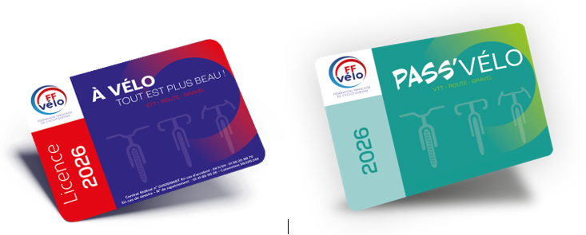

Le Pass'Vélo – Essayez le club sans engagement
Nos sorties privilégient le plaisir de rouler ensemble, dans un esprit de convivialité, d'échanges et de bien-être. Rejoignez-nous pour partager des moments sportifs et détendus, en groupe, avec une attention constante au rythme et au niveau de chacun.
Sorties route
- Mercredi & samedi — Rassemblement à 13h30 et départ à 13h45
- Rendez-vous : place de la Mairie de Bruz
- 6 groupes par allure, dont un groupe allure douce (petit kilométrage)
Le Pass'Vélo

Vous souhaitez profiter d'une période d'essai avec le club avant de vous engager dans la durée (adhésion au club et souscription de la licence fédérale) ?
Dans ce cas, rien de plus simple : souscrivez le Pass'Vélo. Il vous permettra de participer aux sorties pendant 2 mois pour 20 € (période renouvelable une fois).
Lors de l'inscription, bien indiquer le numéro du club : 3505.